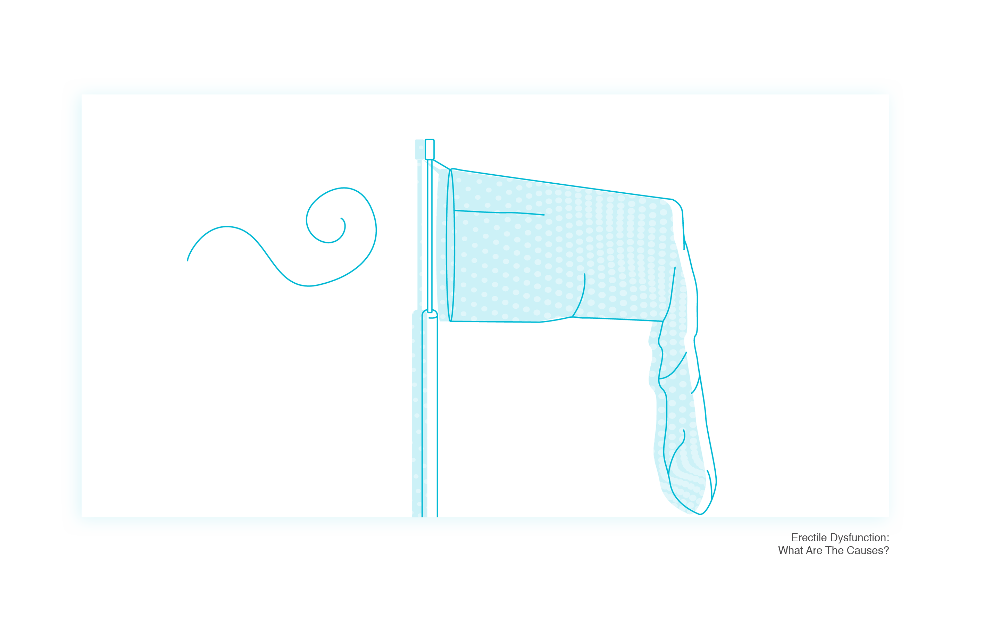
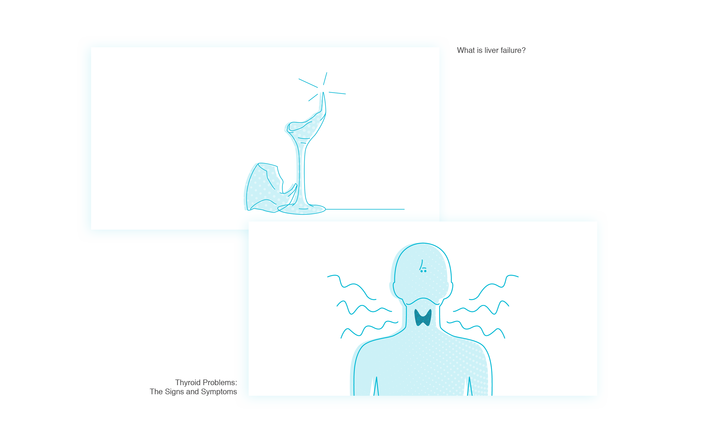
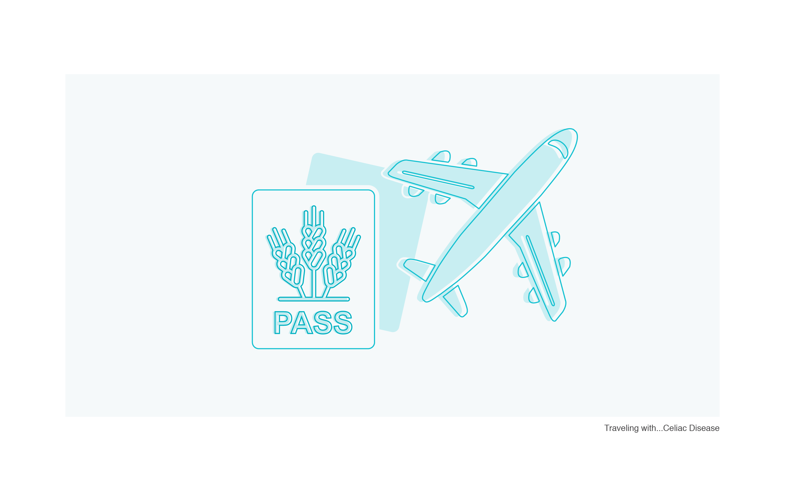
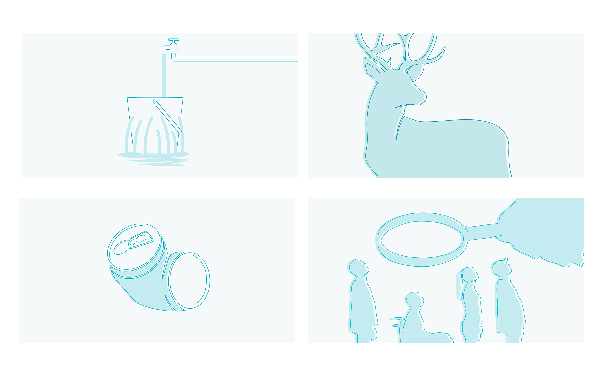

2018
LGC Blog Illustrations
The Process
The idea was to develop illustrations for our blog posts, to standardise and to reinforce our brand within our blog, so it needed to follow some premises that we are trying to achieve throughout our design and communication.
It needed to be clean and medical, accurate but not methodical, clean but not empty, and a few others.
The main idea was to play with the silhouette and abstractions of the themes we're trying to show on our posts, but keeping clear that we know what is behind the abstraction we picked.
The first iteration was to have a clean silhouette, removing extra points to have it more fluid and organic, and adding a few details to give it more form.
To break the plain colour we used transparency and a overlay pattern to make it more playful, as sometimes the subject is quite delicate to show it graphically.
Here are some of the illustration I did for this first iteration:


As we started to develop a new website, with a complete different flow and features, made sense to add more elements and complexity to the way the illustrations were done.
We tweaked the colours a bit to reflect the new main colour we started using and removed the pattern, to avoid too much noise.
Also a background colour was added to delimit the images when placed in a white background (the way our blog was).
Check the new version bellow:


You can check all the illustrations on: http://letsgetchecked.com/articles
If you liked, give a like.
Thanks for watching ;)